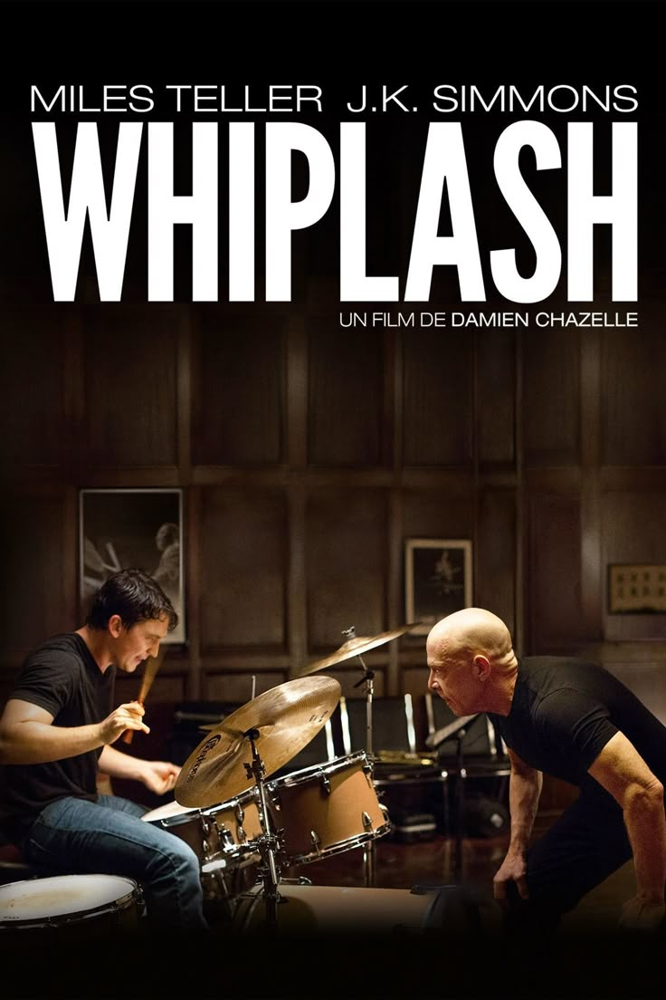

Whiplash

berkisah tentang Andrew Neiman, drummer jazz muda ambisius di konservatori elit, yang terobsesi menjadi yang terbaik. Ambisinya berubah menjadi obsesi berbahaya saat dilatih oleh Terence Fletcher, instruktur kejam yang menggunakan metode intimidasi psikologis dan fisik demi mendorong muridnya mencapai potensi maksimal